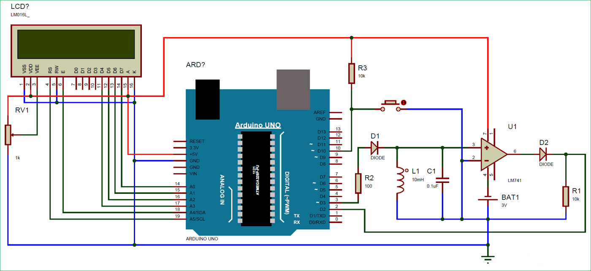
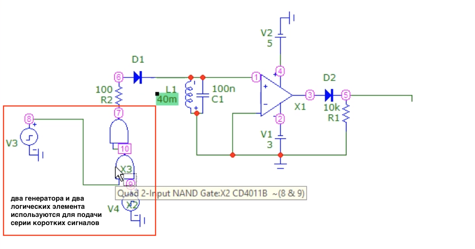
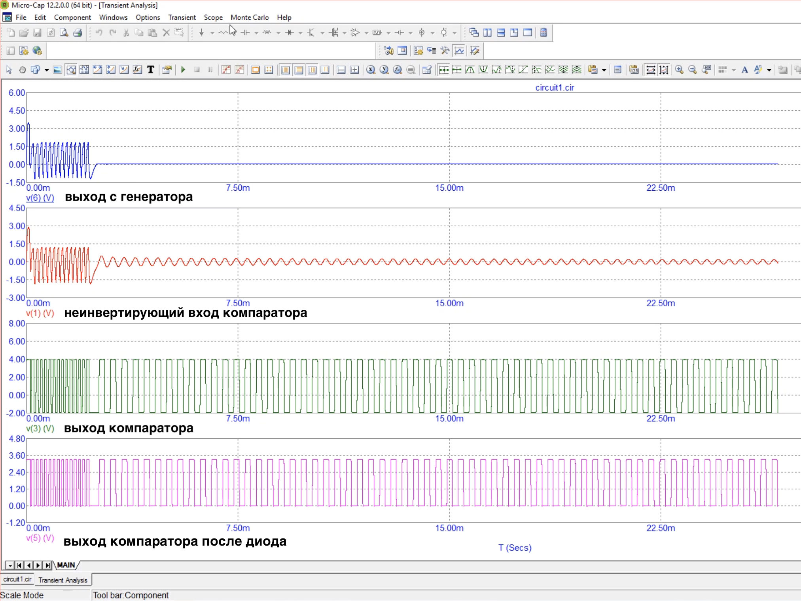
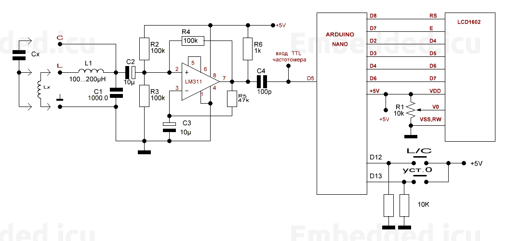
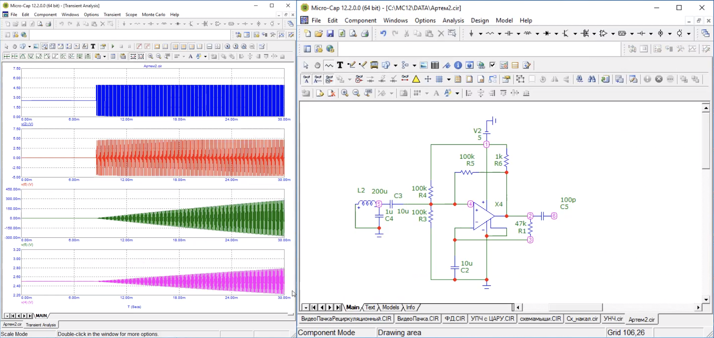
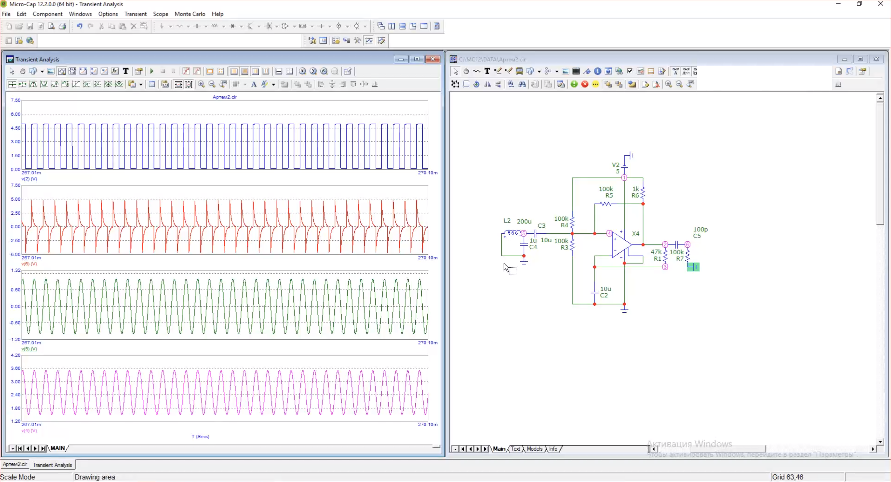
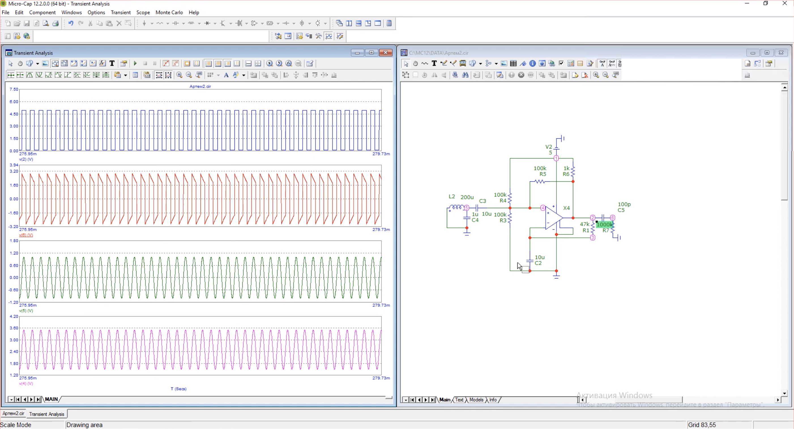
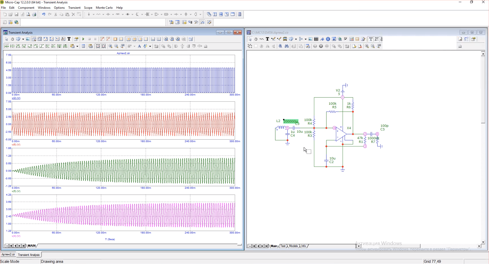
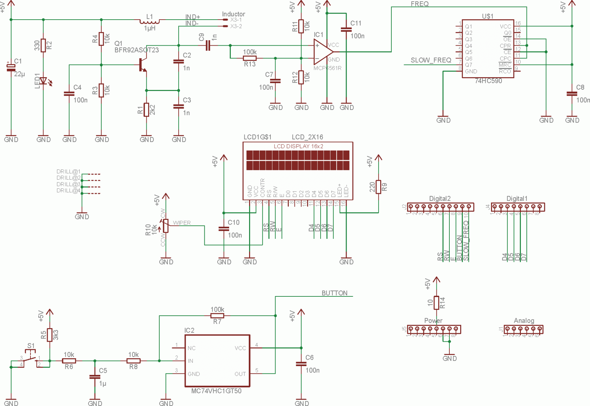
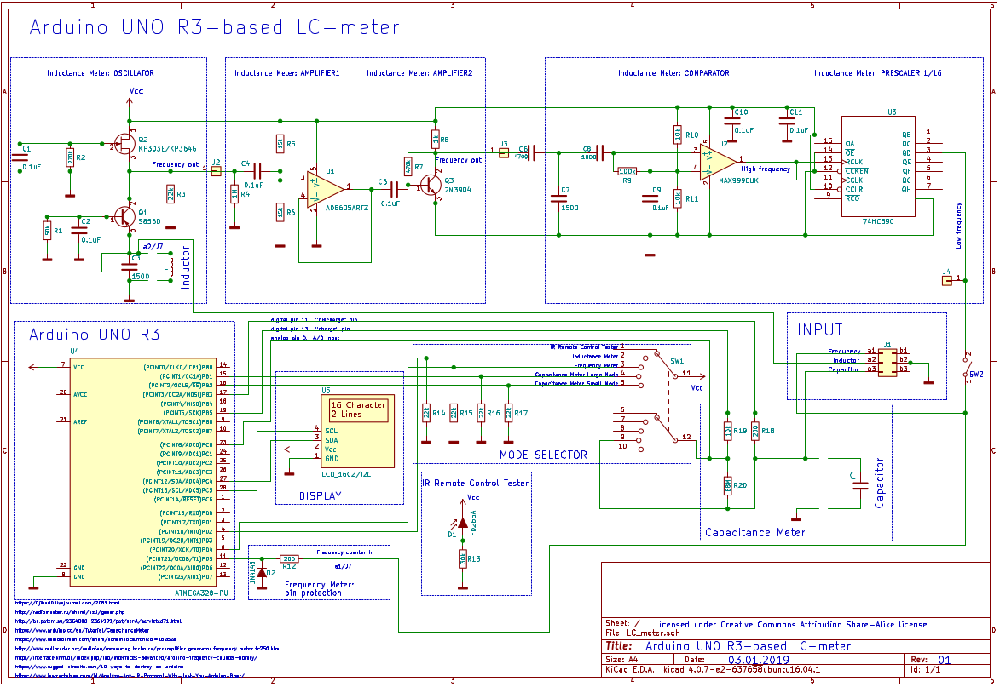

Programming, robotics, traveling
Год назад я приобрел себе мультиметр Aneng Q1. Я сразу влюбился в этот мультиметр. Он удовлетворяет практически всем моим потребностям кроме отсутствия функционала измерения индуктивности. И у меня возникла идея из говна и палок собрать LC метр. В этой статье мы рассмотрим существующие схемы и принцип их работы. А также выберем одну, которую в дальнейшем я буду собирать.
Основная идея построения этого прибора на микроконтроллере (МК) состоит в измеремении частоты колебательного контура на программной стороне МК. При этом зная номинал индуктивности или емкости мы можем вычислить номинал неизвестного компонента. Прибор условно можно разделить на три части:
Рассмотрим первую схему с сайта circuitdigest.com (дубликат microkontroller.ru или аналогичная sampawno.ru):

Работает эта схема следующим образом:
Индуктивность L1 и конденсатор C1 объединенные в LC цепь образуют колебательный контур. После подачи в эту цепь нескольких коротких импульсов на выходе LC цепи образуется синусоидальное колебание на резонансной частоте.
Чтобы измерить частоту этих синусоидальных колебаний с помощью микроконтроллера их необходимо преобразовать в последовательность прямоугольных импульсов (меандр). В которой логическая единица будет соотвествовать положительной полуволне исходного сигнала, а ноль – отрицательной. Для этого используется компаратор (в данном случае операционный усилитель LM741 в качестве компаратора) и диод отсекающий на выходе отрицательную часть сигнала.
Для проверки схемы я воссоздал её в программе Micro-Cap:

На генераторе я создаю 15 импульсов длительностью 100мкс при периоде 150мкс. Как видно после накачки контура, он начинает резонировать на собственной частоте:

В этой схеме мне в глаза бросается пару моментов:
Вторая схема лишена этих недостатков и мне нравится гораздо больше (источник embedded.icu).

Основная фишка этой схемы то, что для накачки контура используется обратная связь самого компаратора. Смоделируем схему в Micro-Cap и проверим как она работает.

Как видно в точке 4 или 5 амплитуда калебаний нарастает. Это происходит в первые 30мс после подачи питания на контур. После чего амплитуда выравнивается, и контур колеблется на резонансной частоте.

Первое, что бросается в глаза в точке 6 (красный график), форма сигнала очень острая, это связано с тем, что при симуляции вместо сопротивления входного канала МК подключен резистор на 100кОм. Что очень мало. Увеличим сопротивление до 1000кОм:

Лучше. Увеличим ещё до 10.000кОм:
Теперь это выглядит как нужно. Хотя на самом деле я не совсем понимаю смысл конденсатора C5 в выходной цепи. И соглашусь с автором, из источника которого я взял схему, в том, что этот конденсатор на выходе не нужен. Тк МК воспринимает за логический ноль все что ниже порогового значения около 2-3 вольт.
Предположу, что возможно автор оригинальной схемы произвел тесты и увидел, что амплитуда в точке 2 (синий график) не опускается до ноля. И хотел решить это с помощью конденстора, но тогда в схеме необходим диод, отсекающий отрицательную часть (тк не понятно как может повести себя МК при подаче отрицательного напряжения).

При увеличении частоты видно, как конденсатору C5 не хватает времени дозарядиться, и уже сопротивление в 10МОм становится слишком большим. Из-за этого график в точке 6 опять становится игольчатым. Но как я и сказал выше: совершенно ни к чему использовать конденсатор C5.
Далее я погонял схему с разными значениями индуктивности и получил разрешающую способность в районе 0.05-0.1мкГн. А также меня удивил диапазон измерений, прибор может измерять как очень маленькие индуктивности в до 0.1мкГн так и большие – 200Гн. Нижняя частота колебательного контура ограничена конденсатором C2, а верхняя свойствами компаратора (ОУ).
Мне понравилась эта схема, но давайте рассмотрим ещё парочку для общего ознакомления.
Сслыка на оригинал radiolocman.com и на русскоязычную копию radiohata.ru.

Как видно здесь калебательный контур отделен от компаратора. А для его накачки используется схема на базе транзистора Q1. Также на схеме можно заметить дополнительную микросхему 74HC590 – счетчик, который позволяет снизить замеряемую частоту в 16 раз.
Рассмотрим ещё одну похожую схему.
Источник alpop/Arduino-UNO-R3-based-LC-meter.

Мне нравится это схема своей модульностью: каждый отдельный модуль выполняет строго свою функцию. Рассмотрим основные модули:
OCILLATOR – колебательный контур, накачка которого выполняется на двух транзисторах (основан на предыдущей схеме и переработан 0jihad0.livejournal.com).AMPLIFIER 1 – на самом деле это не усилитель, а повторитель на базе ОУ AD8605. Он используется по причине очень большого сопротивления на входе ОУ. Таким образом ОУ не оказывает воздействия на колебательный контур. Если же сразу на выход контура подключить базу транзистора Q3, то для управления этой базой требуется достаточно высокий ток, что будет влиять на работу контура.AMPLIFIER 2 – усилитель сигнала на базе биполярного транзистора.COMPARATOR – вы уже знаете, выполняет задачу сравнения напряжений на его входах.PRESCALER 1/16 – также знакомый вам элемент из предыдущей схемы, служащий для снижения выходной частоты в 16 раз.Кстати после изучения этой схемы я обратил внимание, что ёмкость конденсатора измеряется не через схему с колебательным контуром, а по другому принципу Capacitance Meter.
После этого я откался от идеи делать LC метр и решил сделать просто измеритель индуктивности. Тк функционал измерения ёмкости у меня уже реализован в мультиметре. А городить в контуре сменяемые индуктивности мне не хочется (хотя к этому всегда можно вернуться).
Я нашел еще одну схему LC-метра выполненного на МК на базе PIC. Где не используется компаратор, но мне это не подходит. Ссылку осталяю для общего ознакомления.
Мне понравилась 4я схема, но я не смог ответить себе на сколько она лучше в плане измерения индуктивности. Да и у меня нет компонентов для её сборки под рукой (именно об этом будет вторая часть). Поэтому я решил собрать 2ю схему, и посмотреть как она себя поведёт. А если уткнусь в предел по частоте, то добавлю счетчик, как это сделано в 3ей и 4ой схемах.
Продолжение следует.